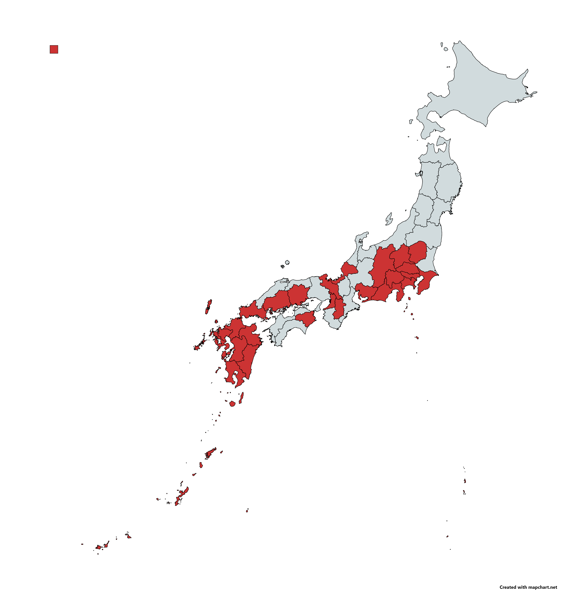

HOME
LOCATIONS
ABOUT
THE FORMS
Where I've been:
Okinawa
Kagoshima
Miyazaki
Kumamoto
Oita
Fukuoka
Saga
Yamaguchi
Hiroshima
Okayama
Tokushima
Kyoto
Osaka
Nara
Aichi
Shizuoka
Yamanashi
Kanagawa
Tokyo
Saitama
Chiba
Gunma
Nagano
Tochigi
Iwoto

Create your own map here:
Download your own blank map here